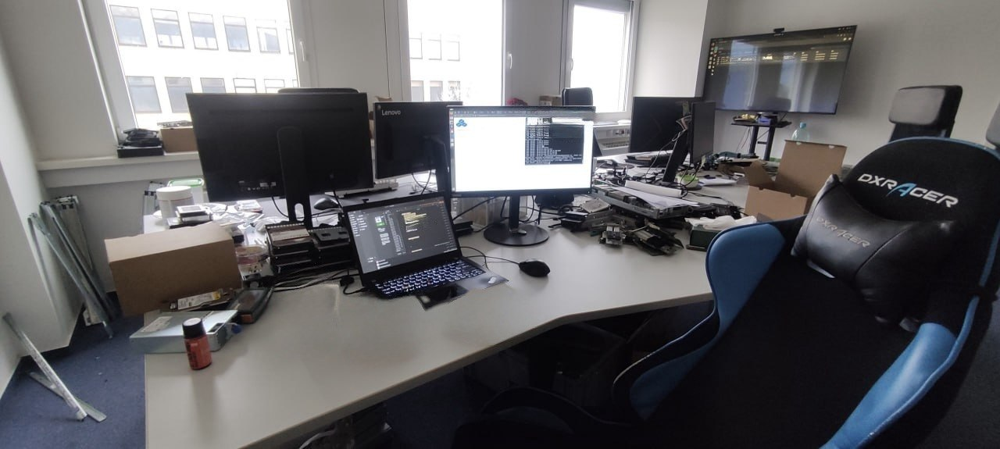
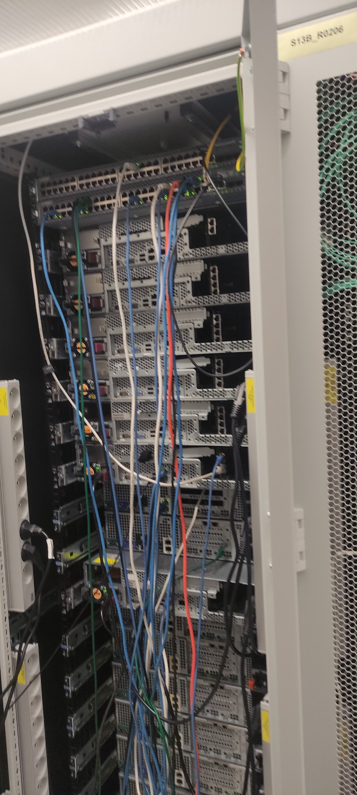
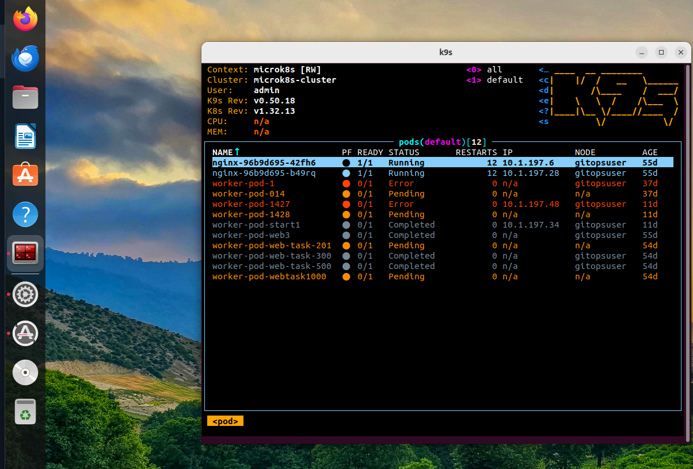
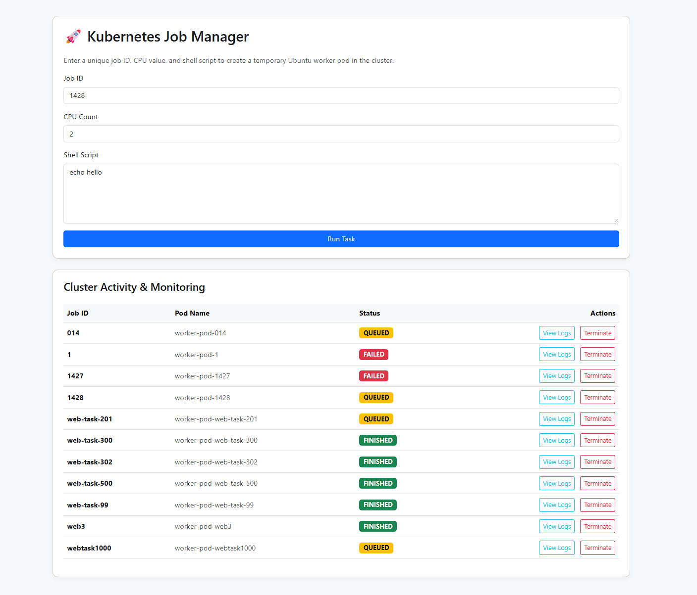
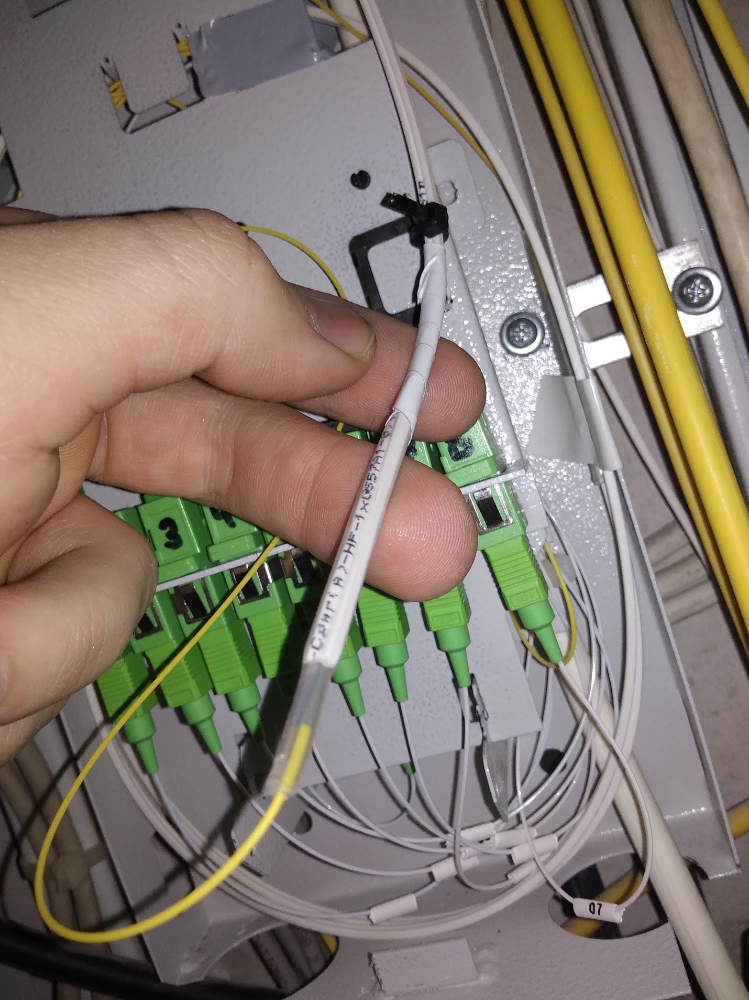
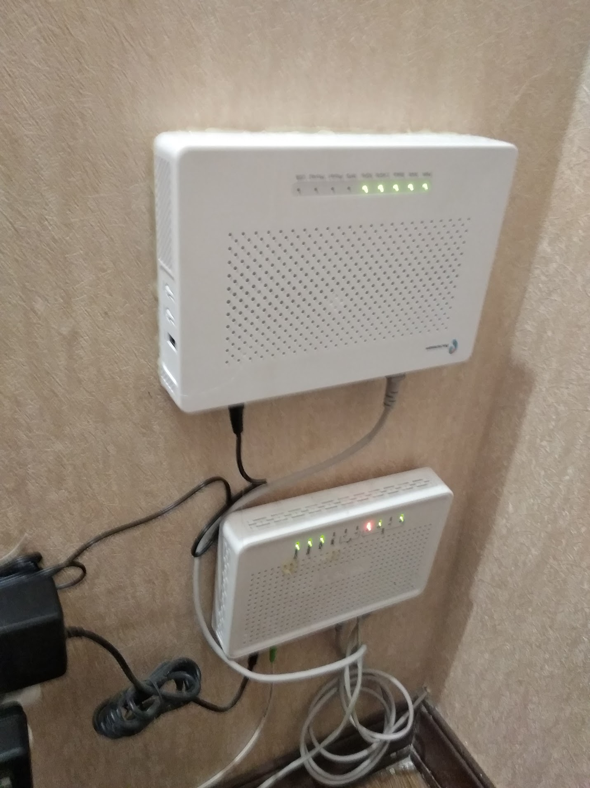
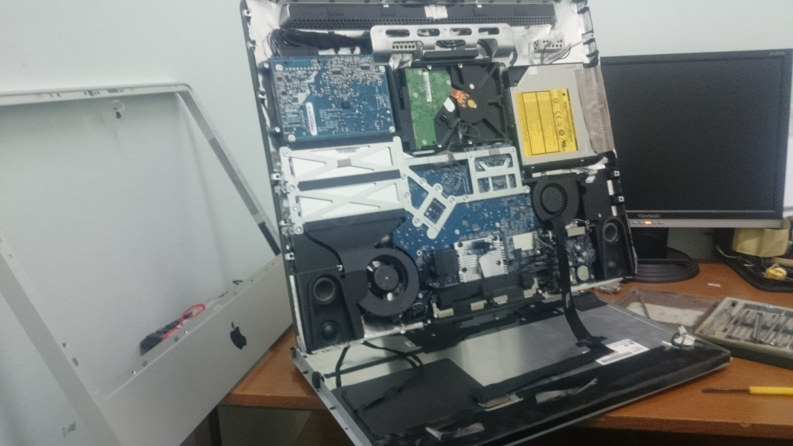

Procesy a zatížení systému
uptime
top
ps aux --sort=-%cpu | head
ps aux --sort=-%mem | head
pgrep -af nginxKontrola zatížení serveru, procesů s nejvyšší spotřebou CPU nebo paměti a vyhledání konkrétní běžící služby.
Výběrové řízení · Onlio, a.s.
Přehled mých pracovních zkušeností se správou Linuxových systémů, cloudové infrastruktury, monitoringem, automatizací a provozem zákaznických prostředí.
Úvod
Dobrý den, paní Tindel,
děkuji Vám za zprávu a za možnost podrobněji představit své zkušenosti. Níže uvádím odpovědi na jednotlivé otázky včetně ukázek praktické práce s cloudovým prostředím, Kubernetes, serverovým hardwarem a zákaznickou infrastrukturou.
Otázky 1–8
Jednotlivé bloky lze otevřít samostatně. Navigace v horní části stránky umožňuje rychlý přechod na konkrétní otázku.
V současnosti dokončuji magisterské studium informatiky. Všechny předměty mám splněné a zbývá mi obhajoba diplomové práce. Mám oprávnění pracovat v České republice a mohu nastoupit na hlavní pracovní poměr.
Moje poslední relevantní pozice byla Junior Linux Administrator ve společnosti Cloudinfrastack v Praze. Pracoval jsem v prostředí velkého privátního cloudu, který zahrnoval více než 300 fyzických serverů využívaných různými zákaznickými projekty.
Každodenní práce spojovala kontrolu provozu, reakce na monitorovací upozornění, prvotní analýzu incidentů, práci s Linuxovými servery, cloudovými virtuálními stroji, úložištěm a fyzickým hardwarem v datacentru. Součástí práce byla také komunikace se zákazníky a kolegy během nepřetržitého provozu.
U běžných incidentů jsem samostatně ověřoval stav serveru, dostupnost služeb, systémové prostředky, síťovou komunikaci a související logy. U složitějších nebo rizikových zásahů jsem problém zdokumentoval a předal zkušenějšímu administrátorovi s již připravenými technickými informacemi.


Nejvíce praktických zkušeností mám se servery Ubuntu 22.04 a 24.04. V předchozích pracovních prostředích jsem používal také Astra Linux a své znalosti nyní rozšiřuji směrem k enterprise distribucím založeným na Red Hat Linuxu, CentOS Stream a openSUSE.
Při každodenní administraci jsem se k serverům připojoval prostřednictvím SSH, kontroloval stav systémových služeb, běžící procesy, zatížení CPU, využití operační paměti, diskový prostor a síťovou dostupnost. Při problému jsem nejprve ověřil celkový stav serveru a následně pokračoval ke konkrétní službě, jejím logům a závislostem.
Pro základní kontrolu serveru jsem používal například
příkazy uptime, top,
ps, free,
df, du,
lsblk, systemctl
a journalctl. Pomocí nich jsem ověřoval,
zda problém způsobuje nedostatek prostředků,
zastavený proces, zaplněný disk nebo chyba konkrétní
systémové služby.
uptime
top
ps aux --sort=-%cpu | head
ps aux --sort=-%mem | head
pgrep -af nginxKontrola zatížení serveru, procesů s nejvyšší spotřebou CPU nebo paměti a vyhledání konkrétní běžící služby.
free -h
vmstat 1 5
cat /proc/meminfo
swapon --showOvěření dostupné paměti, využití swapu a toho, zda server netrpí dlouhodobým nedostatkem RAM.
df -hT
lsblk -f
du -xhd1 /var | sort -h
find /var/log -type f -size +500M -lsKontrola zaplnění disků, typu souborového systému, připojených svazků a vyhledání adresářů nebo logů, které spotřebovávají nejvíce prostoru.
systemctl status nginx
systemctl --failed
journalctl -u nginx --since "1 hour ago"
journalctl -p err -bKontrola stavu služby, neúspěšných systemd jednotek a chyb zaznamenaných od posledního spuštění serveru.
Znalosti Linuxu si dále systematicky rozšiřuji prostřednictvím kurzu Introduction to Linux 1 v rámci Cisco Networking Academy. V laboratorním prostředí porovnávám správu distribucí Ubuntu, CentOS a openSUSE, včetně práce s balíčkovacími systémy a základní konfigurace serveru.

Součástí mé zkušenosti není pouze vzdálená práce s operačním systémem. Pracoval jsem také přímo s fyzickými rackovými servery, jejich instalací, kontrolou komponent, výměnou paměti, disků a diagnostikou problémů při startu. Díky tomu dokážu lépe rozlišit, zda se problém nachází na úrovni aplikace, operačního systému, disku nebo fyzického hardwaru.


Ano, s provozem služeb, monitoringem a analýzou logů mám praktickou pracovní zkušenost. V Cloudinfrastacku jsem sledoval stav Linuxových serverů a souvisejících cloudových služeb prostřednictvím monitorovacího prostředí Sensu a Uchiwa.
Monitoring upozorňoval například na nedostupné servery, zastavené systémové služby, zaplněné disky, problémy s databázovou replikací, síťovou komunikací, certifikáty nebo neúspěšnou aplikací centrální konfigurace.
Po přijetí upozornění jsem nejprve ověřil, zda jde o skutečný incident, krátkodobý výkyv nebo očekávaný důsledek plánované změny. Následně jsem se připojil na server přes SSH a zkontroloval jeho dostupnost, zatížení, využití paměti, diskový prostor, běžící procesy a stav příslušné služby.
Při analýze jsem kombinoval informace z monitoringu se systémovými a aplikačními logy. Kontroloval jsem, kdy problém vznikl, zda mu předcházela změna konfigurace a jestli chyba ovlivnila také navazující služby nebo další servery.
uptime
top
free -h
df -hT
ps aux --sort=-%cpu | head
ps aux --sort=-%mem | headTěmito příkazy jsem ověřoval zatížení serveru, dostupnou paměť, diskový prostor a procesy s nejvyšší spotřebou prostředků.
systemctl status nginx
systemctl --failed
journalctl -u nginx -n 100
journalctl -u nginx --since "30 min ago"
journalctl -p err -bU nefunkční služby jsem kontroloval její stav, poslední chybové záznamy a další neúspěšné systemd jednotky.
df -hT
du -xhd1 /var | sort -h
du -xhd1 /var/log | sort -h
find /var/log -type f -size +500M -ls
journalctl --disk-usageNejprve jsem určil zaplněný filesystem a potom dohledal adresář nebo log, který spotřebovával nejvíce prostoru.
ping <host>
ss -lntup
curl -I http://127.0.0.1
curl -vk https://<host>
ip addr
ip routeOvěřoval jsem síťovou dostupnost, naslouchající porty, lokální odpověď aplikace a základní konfiguraci síťových rozhraní.
Mezi častější situace patřil zaplněný disk nebo adresář s logy, zastavený démon, nedostupný server, problém se síťovým rozhraním, chyba certifikátu nebo neúspěšná konfigurace spravovaná prostřednictvím Puppetu.
Pokud bylo bezpečné provést restart služby, nejprve jsem zaznamenal její stav a chyby, následně jsem službu restartoval a ověřil nejen stav Active, ale také naslouchající port, odpověď aplikace a návrat monitoringu do normálního stavu.
Při širším incidentu jsem kontroloval také související vrstvy infrastruktury, například stav virtuálního serveru v OpenStacku, stav úložiště Ceph nebo databázové replikace.
openstack server list
openstack server show <server-id>
ceph -s
ceph osd treeKontrola stavu virtuální instance a distribuovaného úložiště pomáhala určit, zda chyba vznikla přímo v aplikaci nebo v nižší vrstvě infrastruktury.
mysql -e "SHOW SLAVE STATUS\G"U databázových upozornění jsem kontroloval stav replikace, poslední chybu a hodnoty ukazující případné zpoždění repliky.
Součástí řešení byla také komunikace se zákazníky a kolegy. Prostřednictvím chatu jsem v češtině nebo angličtině upřesnil projevy problému, informoval o provedených kontrolách a po zásahu předal výsledek.
Pokud problém vyžadoval vyšší oprávnění nebo rizikový zásah, připravil jsem technické informace, relevantní výpisy z logů a incident předal zkušenějšímu administrátorovi.
Ověření, zda jde o skutečný incident a jaký může mít dopad.
Kontrola serveru, služby, prostředků, sítě a souvisejících logů.
Bezpečný restart, oprava konfigurace nebo předání problému k eskalaci.
Kontrola portu, odpovědi služby, logů a monitoringu.
Moje zkušenosti rozlišuji na technologie používané v produkčním provozu a nástroje, se kterými pracuji ve vlastním laboratorním prostředí a při přípravě diplomové práce.
V produkčním prostředí jsem pracoval především s Linuxovými servery Ubuntu, virtuálními instancemi v OpenStacku, distribuovaným úložištěm Ceph a centrální správou konfigurace pomocí Puppetu a Foremanu.
Pro kontrolu provozu jsem používal Sensu a Uchiwa. Prostřednictvím SSH a Linuxových nástrojů jsem ověřoval stav serverů, systémových služeb, procesů, disků, síťové dostupnosti a logů.
Ubuntu, SSH, systemd, OpenStack, Ceph a práce s fyzickými servery.
Sensu, Uchiwa, systémové a aplikační logy, kontrola služeb a prvotní diagnostika incidentů.
Puppet a Foreman pro centrální konfiguraci, kontrolu agentů a správu certifikátů.
MicroK8s, Argo CD, Helm, K9s, YAML manifesty a GitHub repozitáře.
Praktickou laboratorní zkušenost s Kubernetes jsem získal při přípravě diplomové práce. Na Ubuntu serveru jsem vytvořil MicroK8s cluster, nainstaloval Argo CD, propojil jej s GitHub repozitářem a nasadil demonstrační aplikaci pomocí Helm chartu.
Pracoval jsem s objekty Deployment, Pod, Service,
ReplicaSet a Namespace. Pomocí příkazů
kubectl jsem kontroloval stav workloadů,
logy, události a průběh nasazení.
kubectl get nodes
kubectl get pods -A
kubectl get deployments -A
kubectl describe pod <pod-name>
kubectl logs <pod-name>Kontrola nodů, workloadů, událostí a logů při nasazování nebo diagnostice aplikace.
helm list -A
helm upgrade --install <release> <chart>
kubectl get applications -n argocdNasazení aplikace pomocí Helm chartu a ověření jejího stavu v Argo CD.
V rámci GitOps testu byl požadovaný stav aplikace uložen v Git repozitáři. Argo CD porovnávalo deklarovaný stav se skutečným stavem clusteru a při ruční změně počtu replik dokázalo odchylku rozpoznat a pomocí self-healingu obnovit správnou konfiguraci.
Pro rychlou orientaci v clusteru jsem používal také K9s, kde jsem sledoval Pody, jejich restarty, IP adresy, přiřazení k nodům a stavy Running, Pending, Completed nebo Error.


Linux, OpenStack, Ceph, Puppet a monitoring vycházejí z mé pracovní zkušenosti. Kubernetes, Argo CD, Helm a K9s jsem používal ve vlastním laboratorním prostředí a při přípravě diplomové práce.
Ano, s automatizací a skriptováním mám praktickou zkušenost. Při práci s Linuxovými servery jsem používal Bash příkazy a jednoduché skripty pro opakovatelné kontroly služeb, logů, systémových prostředků a síťové dostupnosti.
Konkrétním příkladem rozsáhlejší automatizace je můj projekt TeamCity Cloud Remote Shell Executor. Projekt vznikl jako demonstrační aplikace inspirovaná principem dočasných build agentů a řeší automatické spouštění shellových úloh v Kubernetes.
Bez této aplikace by bylo potřeba pro každou úlohu ručně připravit Kubernetes manifest, vytvořit Pod, kontrolovat jeho stav, načítat logy a po dokončení prostředek odstranit.
kubectl apply -f worker-pod.yaml
kubectl get pods
kubectl describe pod worker-pod
kubectl logs worker-pod
kubectl delete pod worker-podKaždou úlohu by bylo nutné připravit, spustit, kontrolovat a odstranit pomocí několika samostatných příkazů.
POST /api/jobs/start
GET /api/jobs/list
GET /api/jobs/{id}/logs
DELETE /api/jobs/{id}Webová aplikace a backend převzaly vytváření Podu, kontrolu jeho stavu, načtení logů a odstranění prostředků.
Ve webovém rozhraní uživatel zadá identifikátor úlohy, požadovaný počet CPU a shellový skript. Backend vytvořený v Kotlinu a Spring Bootu vstup zkontroluje a přes Kubernetes API automaticky vytvoří samostatný dočasný Executor Pod.
Aplikace následně pravidelně načítá stav Podu a převádí Kubernetes stavy na jednodušší uživatelské informace, například Queued, Running, Finished nebo Failed. Uživatel může zobrazit logy úlohy nebo Pod ukončit přímo z webového rozhraní.
Uživatel zadá ID, požadované CPU a shellový skript.
Backend připraví definici úlohy a vytvoří dočasný Executor Pod.
Aplikace načítá stav Podu a zpřístupňuje jeho logy.
Po dokončení lze dočasný Pod automaticky nebo ručně odstranit.

Automatizace tím nahradila opakované ruční vytváření manifestů a zadávání několika příkazů kubectl. Celý proces je jednotný, opakovatelný a pro uživatele přehlednější.
Projekt mi zároveň pomohl prakticky pochopit práci s Kubernetes API, životní cyklus Podu, přidělování prostředků, zpracování stavů, čtení logů a bezpečné odstraňování dočasných workloadů.
Několik ručních kroků bylo nahrazeno jedním řízeným procesem od zadání úlohy až po zobrazení výsledku a odstranění dočasného Podu.
Dalším laboratorním příkladem je projekt Predictive Alerting for Cloud Metrics. V Pythonu jsem vytvořil automatizovanou pipeline, která generuje syntetické provozní metriky, připravuje časová okna, trénuje klasifikační model a vyhodnocuje riziko budoucího incidentu.
Projekt je spustitelný v Dockeru a obsahuje automatické testy. Slouží jako praktické propojení monitoringu, Python skriptování, zpracování dat a reprodukovatelného spouštění jednotlivých kroků.
Mám praktické zkušenosti se správou interní i zákaznické infrastruktury. V Cloudinfrastacku jsem pracoval s prostředími, která byla využívána různými zákazníky, a proto bylo při každém zásahu důležité zohlednit nejen stav konkrétního serveru, ale také jeho roli, návazné služby a možný dopad na uživatele.
Se zákazníky jsem komunikoval prostřednictvím chatu v češtině a angličtině. Upřesňoval jsem s nimi projevy problému, informoval je o provedených kontrolách a předával průběžný stav řešení. Po dokončení zásahu jsem stručně popsal výsledek a ověřil, zda je služba z pohledu zákazníka opět dostupná.
Součástí mé práce byla také fyzická správa infrastruktury. Podílel jsem se na instalaci a demontáži rackových serverů, zapojování kabeláže, instalaci operačních systémů a diagnostice problémů při spuštění zařízení. Prováděl jsem kontrolu disků, operační paměti, základních desek, síťových rozhraní a dalších hardwarových komponent.
Již v předchozích zaměstnáních jsem manuálně opravoval stolní počítače, notebooky i servery. Prováděl jsem výměny disků a paměti, čištění a údržbu chladicích systémů, diagnostiku základních desek, obnovu operačních systémů a vytváření záložních kopií. Po opravě jsem vždy ověřoval stabilitu systému, funkčnost zařízení a dostupnost potřebného softwaru.
Zkušenosti mám také s instalací a diagnostikou zákaznických telekomunikačních přípojek. Pracoval jsem s technologiemi GPON, FTTB a ADSL, kontroloval fyzické zapojení, optické a metalické vedení, zákaznické terminály, modemy a síťovou dostupnost. Při problému jsem postupně ověřoval kabeláž, stav zařízení, synchronizaci linky, lokální síť a dostupnost služby.


V dřívější pozici PLC/SCADA inženýra jsem pracoval také přímo v průmyslových zákaznických prostředích. Podílel jsem se na diagnostice systémů Allen-Bradley, kontrole komunikace s PLC, úpravách HMI/SCADA vizualizací a servisních zásazích přímo na provozu. Tato zkušenost mě naučila pracovat opatrně v prostředí, kde může mít technická změna přímý dopad na výrobní proces.
Díky kombinaci práce se zákazníky, fyzickým hardwarem, síťovými přípojkami, servery a průmyslovými systémy se při řešení problému nedívám pouze na jednu vrstvu. Postupně ověřuji fyzické zapojení, síťovou komunikaci, operační systém, běžící službu a její dostupnost pro koncového uživatele.


Ano, právě kombinace provozu infrastruktury, automatizace a bezpečnosti odpovídá směru, kterým se chci dlouhodobě rozvíjet.
Moje zkušenosti začínaly u fyzické infrastruktury, sítí a oprav zařízení. Následně jsem se posunul ke správě serverů, monitoringu a cloudovému provozu. V současné době tyto zkušenosti propojuji s Kubernetes, GitOps a automatizovanou správou infrastruktury.
Bezpečnost vnímám jako součást každého provozního řešení, nikoliv jako samostatný krok na konci projektu. Změny by měly být auditovatelné, uživatelé a služby by měli mít pouze nezbytná oprávnění a citlivé údaje by neměly být součástí běžné konfigurace v otevřené podobě.
U projektu Remote Shell Executor je tento pohled obzvlášť důležitý, protože služba spouští uživatelské příkazy v dočasných kontejnerech. Produkční varianta by proto musela omezit oprávnění Podů, síťovou komunikaci, dobu běhu úloh a spotřebu systémových prostředků. Současně by bylo nutné zachovat auditní historii a bezpečně ověřovat spojení s clusterem.
Prohloubení administrace, diagnostiky a práce s enterprise Linux prostředím.
Nahrazování opakovaných ručních činností řízenými a auditovatelnými procesy.
Správa workloadů, řešení provozních problémů a bezpečné řízení životního cyklu.
Omezení oprávnění, bezpečná konfigurace, audit změn a ochrana provozních dat.
Jedním z konkrétních problémů, které jsem řešil v cloudovém prostředí, byla neúspěšná komunikace Linuxového serveru s Puppet serverem kvůli starému nebo neplatnému SSL certifikátu.
Problém se projevil tím, že Puppet agent nedokázal stáhnout a aplikovat aktuální konfiguraci. Ruční spuštění agenta skončilo chybou související s ověřením certifikátu, takže bylo potřeba obnovit vztah důvěry mezi spravovaným serverem a Puppet CA.
Nejprve jsem se přes SSH připojil na postižený server a ručně spustil Puppet agenta. Tím jsem ověřil, že nejde pouze o krátkodobou síťovou chybu, ale skutečně o problém s certifikátem.
ssh <hostname>
sudo puppet agent -t
sudo puppet agent --test --debug
sudo systemctl status puppet
sudo journalctl -u puppet -n 100Ruční spuštění agenta a kontrola logů potvrdily, že server nemůže dokončit SSL komunikaci s Puppet serverem.
sudo puppet cert list --all
sudo puppet cert print <hostname>Na Puppet serveru jsem ověřil existující certifikát, jeho certname a stav v Puppet CA.
Po potvrzení problému jsem na Puppet serveru odstranil starý certifikát daného hostu. V používaném prostředí byla dostupná starší syntaxe příkazů Puppet CA.
sudo puppet cert clean <hostname>Starý nebo neplatný certifikát byl odstraněn z Puppet CA, aby mohl agent vytvořit nový certificate signing request.
sudo systemctl stop puppet
sudo rm -rf /var/lib/puppet/ssl
sudo systemctl start puppet
sudo puppet agent -t --waitforcert 60Na spravovaném serveru jsem odstranil lokální kopii starých SSL dat a znovu spustil agenta, který vytvořil nový požadavek na certifikát.
Pokud nebylo v prostředí povoleno automatické podepisování certifikátů, bylo následně potřeba nový požadavek zkontrolovat a podepsat na Puppet serveru.
sudo puppet cert list
sudo puppet cert sign <hostname>Před podepsáním jsem ověřil název hostu a následně schválil nový certifikát.
sudo puppet agent -t
sudo systemctl status puppet
sudo journalctl -u puppet -n 50Po vydání nového certifikátu jsem znovu spustil agenta a ověřil, že konfigurace byla úspěšně načtena a aplikována.
Po obnovení certifikátu Puppet agent znovu navázal komunikaci se serverem, stáhl aktuální katalog a aplikoval požadovanou konfiguraci. Následně jsem zkontroloval stav služby, Puppet logy a monitorovací upozornění.
Při řešení jsem postupoval opatrně, protože odstranění nesprávného certifikátu nebo certifikátu jiného hostu by mohlo ovlivnit další spravovaný server. Proto jsem před každým krokem ověřoval hostname, certname a správné prostředí.
Puppet agent nemohl navázat důvěryhodné SSL spojení s Puppet serverem.
Neplatný záznam byl odstraněn z Puppet CA a z lokálního úložiště agenta.
Agent vytvořil nový certificate signing request pro daný server.
Puppet agent úspěšně stáhl katalog a aplikoval konfiguraci.
Komunikace mezi Puppet agentem a Puppet serverem byla obnovena a centrální konfigurace se opět aplikovala bez SSL chyby.
Kontakt
Budu rád za možnost představit své zkušenosti podrobněji během osobního nebo online pohovoru.